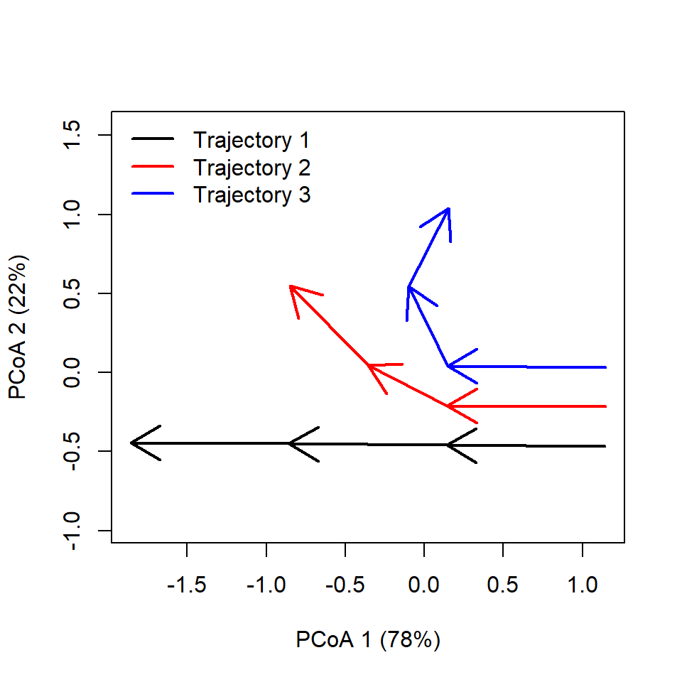
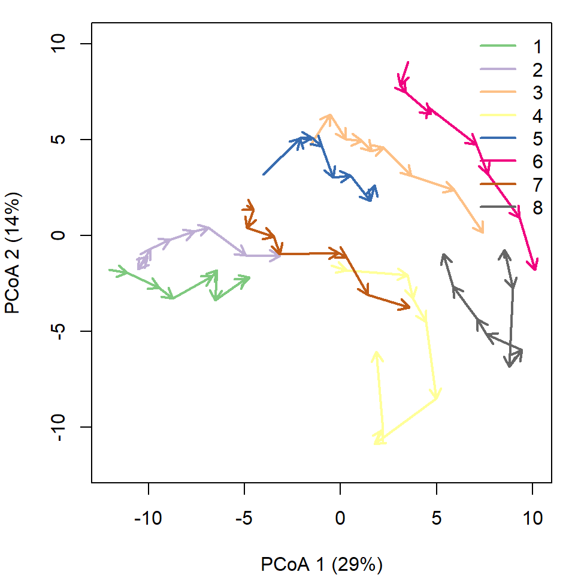
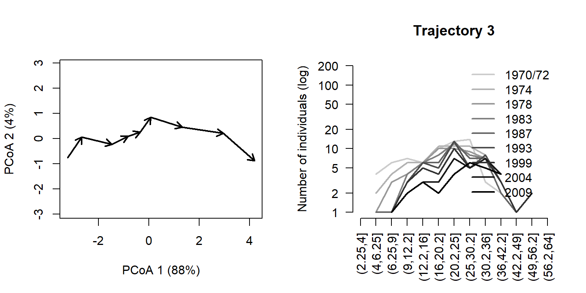
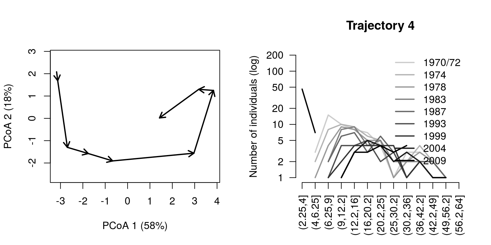
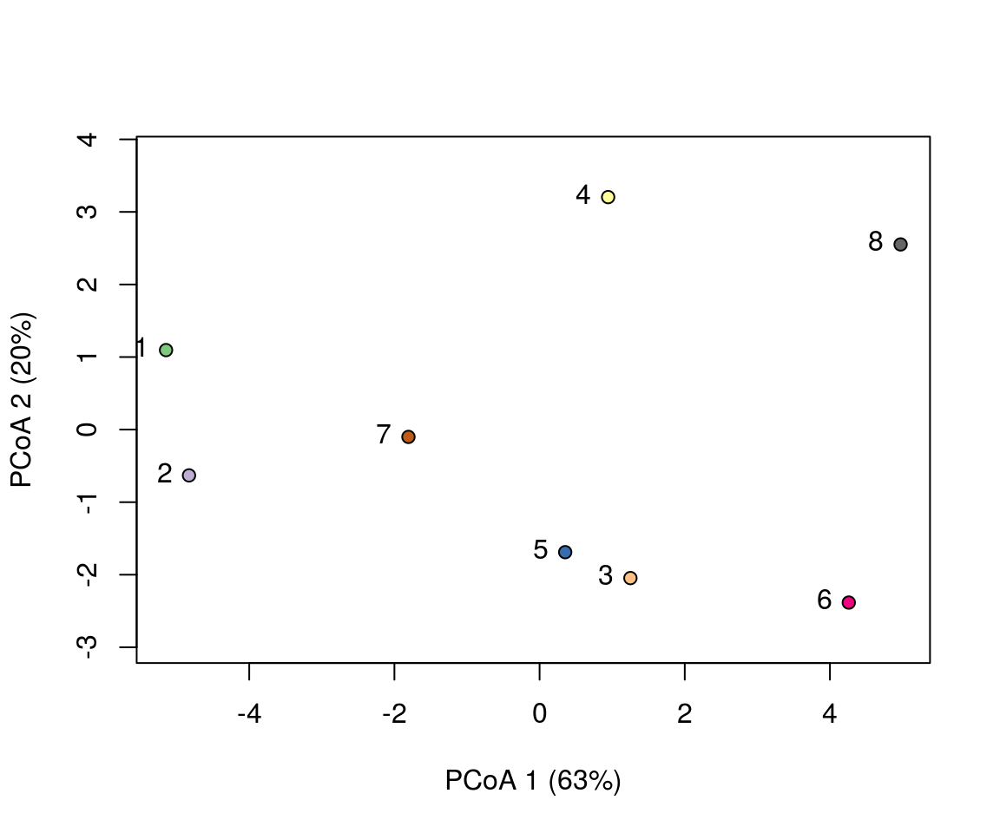

In this vignette you will learn how to conduct community trajectory analysis (CTA), as implemented in package vegclust.
We begin by loading the libraries:
library(vegclust)## Loading required package: vegan## Loading required package: permute## Loading required package: lattice## This is vegan 2.5-1## Loading required package: Kendall
library(RColorBrewer)In this section we describe how to study the trajectories of two sites that have been surveyed four times each. We use a simple example so that geometric calculations can be followed more easily.
To specify community dynamics, we need three data items: (a) a set of community states (i.e. coordinates in a space \(\Omega\)), described using a distance matrix \(d\); (b) a vector specifying the site corresponding to each community state; (c) a vector specifying the survey corresponding to each community state. Let’s first define the vectors that describe the site and the survey of each community state:
#Description of sites and surveys
sites = c(1,1,1,1,2,2,2,2)
surveys=c(1,2,3,4,1,2,3,4)We then build a matrix with the coordinates corresponding to the community states of the two sites during each survey. We assume that the community space \(\Omega\) has 2 dimensions:
#Raw data table
xy<-matrix(0, nrow=8, ncol=2)
xy[2,2]<-1
xy[3,2]<-2
xy[4,2]<-3
xy[5:7,2] <- xy[1:3,2]
xy[8,2]<-2.5
xy[5:6,1] <- 0.5
xy[7,1]<-1.0
xy[8,1]<-2
cbind(sites,surveys,xy)## sites surveys
## [1,] 1 1 0.0 0.0
## [2,] 1 2 0.0 1.0
## [3,] 1 3 0.0 2.0
## [4,] 1 4 0.0 3.0
## [5,] 2 1 0.5 0.0
## [6,] 2 2 0.5 1.0
## [7,] 2 3 1.0 2.0
## [8,] 2 4 2.0 2.5The matrix of Euclidean distances \(d\) between community states in \(\Omega\) is then:
#Distance matrix
D = dist(xy)
D## 1 2 3 4 5 6 7
## 2 1.000000
## 3 2.000000 1.000000
## 4 3.000000 2.000000 1.000000
## 5 0.500000 1.118034 2.061553 3.041381
## 6 1.118034 0.500000 1.118034 2.061553 1.000000
## 7 2.236068 1.414214 1.000000 1.414214 2.061553 1.118034
## 8 3.201562 2.500000 2.061553 2.061553 2.915476 2.121320 1.118034To begin our analysis of the two trajectories we display them in an ordination space, using function trajectoryPCoA. Since \(\Omega\) has only two dimensions, the Principal Coordinates Analysis (PCoA) on \(d\) displays the complete space:
trajectoryPCoA(D, sites, surveys, traj.colors = c("black","red"), lwd = 2)
legend("topright", col=c("black","red"), legend=c("Trajectory 1", "Trajectory 2"), bty="n", lty=1, lwd = 2)
While trajectory of site ‘1’ (black arrows) is made of two segments of the same length and direction, trajectory of site ‘2’ (red arrows) has a second segment that bends and is longer than that of the segond segment of site ‘1’.
We can obtain the length of trajectory segments using function trajectoryLengths and the angles between consecutive segments, using function trajectoryAngles:
trajectoryLengths(D, sites, surveys)## S1 S2 S3 Trajectory
## 1 1 1.000000 1.000000 3.000000
## 2 1 1.118034 1.118034 3.236068
trajectoryAngles(D, sites, surveys)## S1-S2 S2-S3 mean sd
## 1 180.0000 180.0000 180.0000 0.000000
## 2 153.4349 143.1301 148.2825 7.286627where some segments are longer and angles are smaller for trajectory of site ‘2’. In this case, the same information could be obtained by inspecting the PCoA representation, but in a case of \(\Omega\) having many dimensions, the PCoA representation will correspond to a reduced space and hence, angles and lengths will not correspond exactly to those of functions trajectoryLengths and trajectoryAngles, which take into account the full space.
One way of determining the degree to which trajectories follow directional trends (i.e. more or less straight pathways) involves considering all pairs of triplets in the trajectory. This approach is implemented in function trajectoryDirectionality:
trajectoryDirectionality(D, sites, surveys)## 1 2
## 1.0000000 0.9398232As expected, trajectory of site ‘2’ is less straight than trajectory of site ‘1’. Although it would be desirable, the function does not perform any statistical test on directionality.
Community states occupy a position within their trajectory that depends on their position along the total pathway of the trajectory. By adding the length of segments prior to a given state and dividing the sum by the total length of the trajectory we obtain the relative position of the community state. Function trajectoryProjection allows obtaining the relative position of each point of a trajectory. To use it for this purpose one should use as parameters the distance matrix between state and the indices that conform the trajectory. For example for the two example trajectories we would have:
trajectoryProjection(D, 1:4, 1:4)## distanceToTrajectory segment relativePosition
## 1 0 1 0.0000000
## 2 0 1 0.3333333
## 3 0 2 0.6666667
## 4 0 3 1.0000000
trajectoryProjection(D, 5:8, 5:8)## distanceToTrajectory segment relativePosition
## 5 0 1 0.0000000
## 6 0 1 0.3090170
## 7 0 2 0.6545085
## 8 0 3 1.0000000Because the trajectory of site ‘2’ as the second and third segments that are longer than the first, the relative position of state ‘6’ is lower than 1/3 and that of state ‘7’ is lower than 2/3.
Function trajectoryProjection can also be used to project arbitrary community states on a given trajectory. For example we can study the projection of third state of the trajectory of site ‘1’ (i.e. state 3) onto the trajectory of site ‘2’ (i.e. states 5 to 8):
trajectoryProjection(D, 3, 5:8)## distanceToTrajectory segment relativePosition
## 3 0.8944272 2 0.5163119When trajectories have been sampled the same number of times, function trajectoryConvergence allows performing tests of convergence based on the trend analysis of the sequences of distances between points of the two trajectories (i.e. first-first, second-second, …):
trajectoryConvergence(D, sites, surveys, symmetric = TRUE)## $tau
## 1 2
## 1 NA 0.9128709
## 2 0.9128709 NA
##
## $p.value
## 1 2
## 1 NA 0.1485617
## 2 0.1485617 NAActually, the function performs the Mann-Whitney trend test. Values of the statistic (‘tau’) larger than 0 correspond to trajectories that are diverging, whereas values lower than 0 correspond to trajectories that are converging. By setting symmetric = FALSE the convergence test becomes asymmetric. In this case the sequence of distances is that of points of one trajectory projected onto the other:
trajectoryConvergence(D, sites, surveys, symmetric = FALSE)## WARNING: Error exit, tauk2. IFAULT = 12## $tau
## 1 2
## 1 NA 0.8164966
## 2 0.9128709 NA
##
## $p.value
## 1 2
## 1 NA 1
## 2 0.1485617 NATo start comparing trajectories between sites, one important step is the calculation of distances between directed segments, which can be obtained by calling function segmentDistances:
segmentDistances(D, sites, surveys)$Dseg## 1[1-2] 1[2-3] 1[3-4] 2[1-2] 2[2-3]
## 1[2-3] 1.000000
## 1[3-4] 2.000000 1.000000
## 2[1-2] 0.500000 1.118034 2.061553
## 2[2-3] 1.414214 1.000000 1.414214 1.118034
## 2[3-4] 2.500000 2.061553 2.000000 2.121320 1.118034Distances between segments are affected by differences in both position and direction. Hence, among the six segments of this example, the distance is maximum between the first segment of trajectory ‘1’ and the first segment of trajectory ‘2’.
Distances between segments are internally calculated when comparing whole trajectories using function trajectoryDistances. Here we show the dissimilarity between the two trajectories as assessed using either the Hausdorff distance (equal to the maximum distance between directed segments) or the directed segment path distance (an average of distances between segments):
trajectoryDistances(D, sites, surveys, distance.type = "Hausdorff")## 1
## 2 2.5
trajectoryDistances(D, sites, surveys, distance.type = "DSPD")## 1
## 2 1.069036In this example we analyze the dynamics of 8 permanent forest plots located on slopes of a valley in the New Zealand Alps. The study area is mountainous and centered on the Craigieburn Range (Southern Alps), South Island, New Zealand. Forests plots are almost monospecific, being the mountain beech (Fuscospora cliffortioides) the main dominant tree species. Previously forests consisted of largely mature stands, but some of them were affected by different disturbances during the sampling period (1972-2009) which includes 9 surveys. We begin our example by loading the data set, which includes 72 plot observations:
data("avoca")Community data is in form of an object stratifiedvegdata. To account for differences in tree diameter, while emphasizing regeneration, the data contains individual counts to represent tree abundance and trees are classified in 19 quadratic diameter bins (in cm): {(2.25, 4], (4, 6.25], (6.25, 9], … (110.25, 121]}. The data set also includes vectors avoca_surveys and avoca_sites that indicate the survey and forest plot corresponding to each forest state.
Before starting community trajectory analysis, we have to use function vegdiststructto calculate distances between forest plot states in terms of structure and composition:
Distances in avoca_D_man are calculated using the Manhattan metric.
The distance matrix avoca_D_man conforms our definition of \(\Omega\). We use trajectoryPCoA to display the relations between forest plot states in this space and to draw the trajectory of each plot:
trajectoryPCoA(avoca_D_man, avoca_sites, avoca_surveys,
axes=c(1,2), length=0.1, lwd=2)
 Note that in this case, the full \(\Omega\) include more than two dimensions, and PCoA is representing 43% of total variance (correction for negative eigenvalues is included in the call to cmdscale from trajectoryPCoA), so one has to be careful when interpreting trajectories visually.
One can inspect specific trajectories using argument selection in function trajectoryPCoA. This allows getting a better view of particular trajectories, here that of forest plot ‘3’:
par(mfrow=c(1,2))
trajectoryPCoA(avoca_D_man, avoca_sites, avoca_surveys,
selection= 3,
length=0.1, lwd=2)
plotTrajDiamDist(3)
In the right hand, we added a representation of the change in the mountain beech tree diameter distribution through time for trajectory of forest plot ‘3’. The dynamics of this plot include mostly growth, which results in individuals moving from one diameter class to the other. The whole trajectory looks mostly directional. Let’s now inspect the trajectory of forest plot ‘4’:
par(mfrow=c(1,2))
trajectoryPCoA(avoca_D_man, avoca_sites, avoca_surveys,
selection= 4,
length=0.1, lwd=2)
plotTrajDiamDist(4)
This second trajectory is less straight and seems to include a turn by the end of the sampling period, corresponding to the recruitment of new saplings.
While trajectory lengths and angles can be inspected visually in ordination diagrams, it is better to calculate them using the full \(\Omega\) space (i.e., from matrix avoca_D_man). Using function trajectoryLengths we can see that the trajectory of forest plot ‘4’ is lengthier than that of plot ‘3’, mostly because includes a lengthier last segment (i.e. the recruitment of new individuals):
trajectoryLengths(avoca_D_man, avoca_sites, avoca_surveys)## S1 S2 S3 S4 S5 S6 S7
## 1 1.2173214 1.5911988 1.0976965 2.1173501 0.5238760 1.5863283 1.5750365
## 2 0.5971165 1.7469687 0.9866591 0.9413060 1.3687614 0.6280231 1.4565581
## 3 1.1480971 1.2404953 0.6508116 0.4371405 0.5098385 1.2078811 1.6241741
## 4 0.7932307 1.8572629 0.7268623 0.8348635 3.0560437 1.9863939 0.9905892
## 5 1.7769875 0.3367341 0.7283030 0.6515714 1.2660552 0.9544933 1.2605333
## 6 2.1891568 0.5312711 1.0035212 0.4113220 2.1394743 1.0482871 1.4924056
## 7 0.2919002 0.8857645 1.0908604 0.5601649 2.0600208 0.3712067 1.1014563
## 8 0.1909713 1.2000266 2.3211891 0.6539882 2.7807668 0.8170202 1.2072425
## S8 Trajectory
## 1 0.6277940 10.336602
## 2 1.1232798 8.848673
## 3 1.4536390 8.272077
## 4 3.8794520 14.124698
## 5 0.5842314 7.558909
## 6 1.9623777 10.777816
## 7 1.7518489 8.113223
## 8 1.5107357 10.681940If we calculate the angles between consecutive segments (using function trajectoryLengths) we see that indeed the trajectory of ‘3’ is rather directional, but the angles of trajectory of ‘4’ are not that low:
trajectoryAngles(avoca_D_man, avoca_sites, avoca_surveys)## S1-S2 S2-S3 S3-S4 S4-S5 S5-S6 S6-S7 S7-S8
## 1 1.382519e+02 93.30194 105.98125 153.05862 66.59343 79.32932 77.80037
## 2 1.118511e+02 145.33494 180.00000 180.00000 154.02889 180.00000 180.00000
## 3 9.275481e+01 149.11172 180.00000 180.00000 129.09257 131.87146 134.31801
## 4 1.423426e+02 180.00000 180.00000 143.74760 124.46393 105.78935 130.19668
## 5 1.379784e+02 108.33600 180.00000 130.04564 114.24103 114.17917 73.87504
## 6 1.383011e+02 133.88325 123.30359 44.15071 180.00000 180.00000 180.00000
## 7 1.263675e+02 64.76223 114.80079 119.28558 180.00000 123.74267 180.00000
## 8 1.909096e-06 180.00000 87.86879 47.63555 108.66052 143.56811 180.00000
## mean sd
## 1 102.0453 32.57270
## 2 161.6021 26.30294
## 3 142.4498 30.79624
## 4 143.7915 27.76914
## 5 122.6650 32.41664
## 6 139.9484 48.82987
## 7 129.8512 40.11229
## 8 106.8190 67.49925By calling function trajectoryDirectionality we can confirm that the trajectory for site ‘4’ is less straight than that of site ‘3’:
trajectoryDirectionality(avoca_D_man, avoca_sites, avoca_surveys)## 1 2 3 4 5 6 7
## 0.8765513 0.8632656 0.9689678 0.7379840 0.8820482 0.8988080 0.9214587
## 8
## 0.7768180We can calculate the resemblance between forest plot trajectories using trajectoryDistances:
## 1 2 3 4 5 6 7
## 2 2.405
## 3 6.805 5.773
## 4 6.123 6.646 5.225
## 5 6.020 5.541 3.235 4.966
## 6 9.490 8.866 3.436 6.043 4.505
## 7 4.024 3.291 4.365 4.993 4.389 6.205
## 8 9.797 9.747 5.591 4.611 6.383 5.043 6.949The closest trajectories are those of plots ‘1’ and ‘2’. They looked rather close in position in the PCoA ordination of \(\Omega\) with all trajectories, so probably it is position, rather than shape which has influenced this low value. The next pair of similar trajectories are those of the ‘3’-‘5’ pair. We can use cmdscale to produce an ordination of resemblances between trajectories:
cmd_D2<-cmdscale(avoca_D_traj_man, add=TRUE, eig=TRUE, k=7)
x<-cmd_D2$points[,1]
y<-cmd_D2$points[,2]
plot(x,y, type="p", asp=1, xlab=paste0("PCoA 1 (", round(100*cmd_D2$eig[1]/sum(cmd_D2$eig)),"%)"),
ylab=paste0("PCoA 2 (", round(100*cmd_D2$eig[2]/sum(cmd_D2$eig)),"%)"), col="black",
text(x,y, labels=1:8, pos=2)